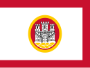
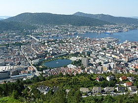

Vous lisez un « article de qualité » labellisé en 2007.
Pour les articles homonymes, voir Bergen
Bergen (/ˈbæ̀rɡn̩/ Écouter) est une ville du Sud-Ouest de la Norvège, capitale du comté de Vestland. Bergen est la deuxième ville du pays avec 278 121 habitants. C'est également une ville portuaire donnant sur la mer du Nord, une ville universitaire et un évêché. La cité est divisée en huit bydeler (districts de la ville), équivalents administratifs de gros quartiers : Arna, Bergenhus, Fana, Fyllingsdalen, Laksevåg, Ytrebygda, Årstad et Åsane. Le centre-ville occupe le bydel de Bergenhus, c’est-à-dire la ville historique qui compte environ 35 000 habitants, les autres n'étant affiliées à la kommune de Bergen qu'administrativement. Il convient aussi de signaler que beaucoup de Bergenois tiennent compte des anciennes appellations non administratives, les strøk, quartiers traditionnels qui ont hérité le plus souvent du nom du domaine agricole présent sur place auparavant. Bergen fait partie du district historique (non administratif) de Midhordland. Les communes limitrophes de Bergen sont Lindås, Osterøy, Vaksdal, Samnanger, Os, Austevoll, Sund, Fjell, Askøy et Meland. Elles couvrent à elles seules la majeure partie du Hordaland (ancien comté fusionné en 2020 avec le comté de Sogn og Fjordane, mais sans la municipalité de Hornindal) et six d'entre elles sont des communes insulaires. La commune de Bergen est délimitée dans sa majeure partie par des fjords : le Sørfjord et le Byfjord au nord et le Raunefjord et le Grimstadfjord à l'ouest.
Bergen (prononcé en français : /bɛʁ.gɛn/ ; norvégien : [ˈbærɡən] Écouter) est d'abord appelée Björgen, Bergvin, ou Björgvinn (graphie moderne : Bjørgvin). Bjørg signifiant montagne et vin signifiant prairie ou pâture. Le nom signifie donc prairie entre les montagnes, aussi de nos jours, avec les mots Berg et engen. Bjørgvin était à l'origine une ferme dépendant de la ferme royale Alrekstad, où ont été jetées les premières fondations de la ville là où se situe aujourd'hui la rue Øvregaten, le long de la baie Vågen2. Le nom a probablement changé en raison de l'influence des Allemands et Hollandais au XVe siècle. Aujourd'hui le nom Bjørgvin est celui de l'évêché de Bergen, compromis qui a été trouvé avec les mouvements régionalistes qui désiraient supprimer l'appellation Bergen.
Bergen |
|
Héraldique |

Drapeau |
|  | |
Administration |
|
|---|---|
Pays |
Norvège+1 |
Région |
Vestlandet |
Comté |
Vestland |
Centre administratif |
Bergen |
Maire |
Marit Warncke |